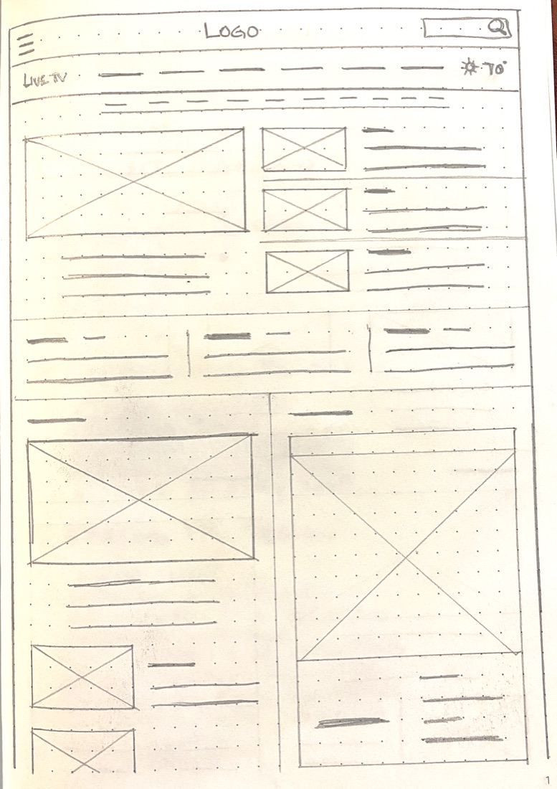
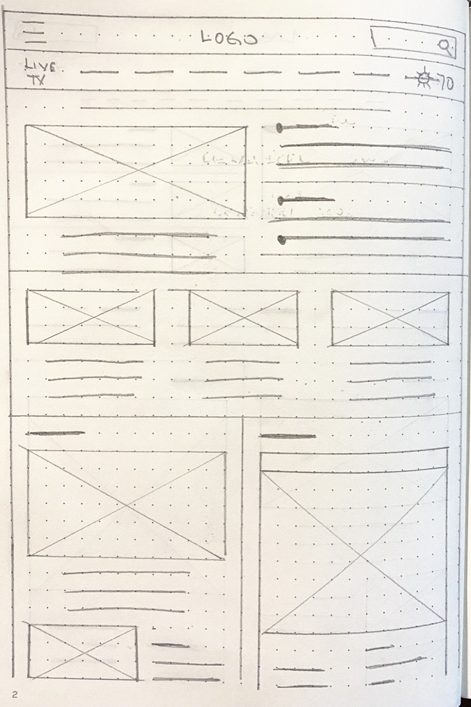
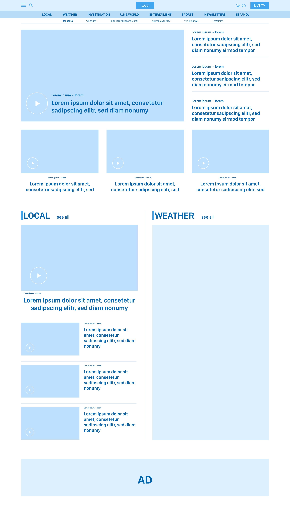
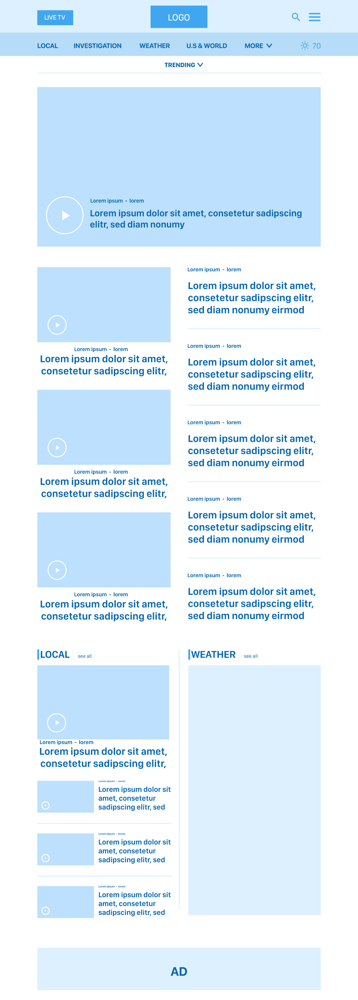
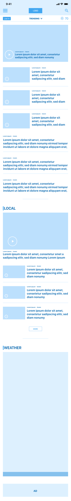
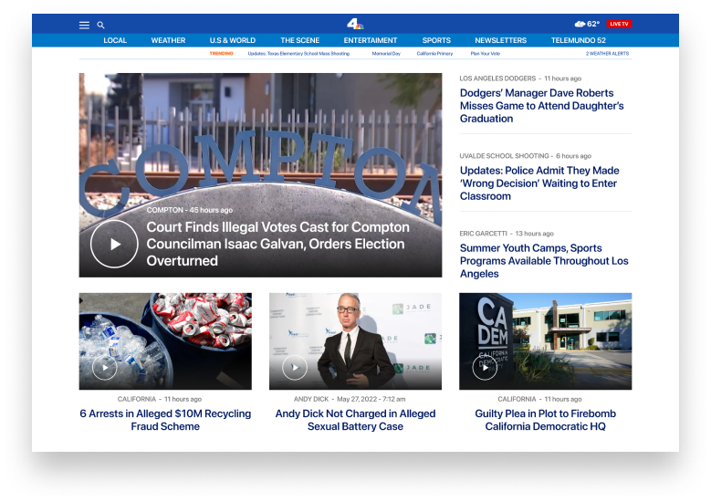
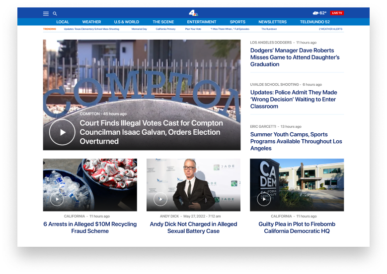
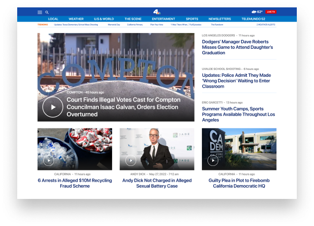
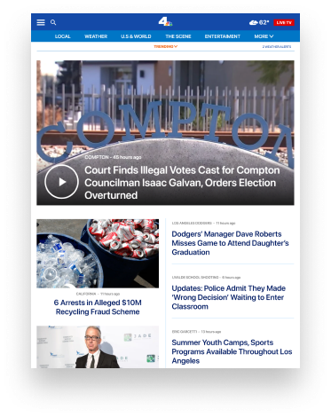
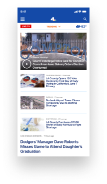

nbclosangeles.com is NBC4's website, one of the most important TV station in the city of Los Angeles and its suburbs. nbclosangeles.com's mission is to keep its viewers informed digitally, offering them local news, national news, and everything that keeps them informed, safe, and able to plan their day.
When users access the nbclosangeles.com homepage, they feel lost. Several contents are all over the website that makes them feel confused, overwhelmed, and undecided on where their next click should go. The website has a design that can show multiple stories in different font sizes, so it is easy to misunderstand the headlines or top stories.
It is a personal project, and the goal is to refresh nbclosangeles.com's homepage and improve the navigation in an easy, friendly, and understanding way. Also, I'm looking; as a result, to improve the user experience and obtain maximum viewers' satisfaction.
This project lasted from start to finish for five weeks.
UX Designer. UX Research.
Plan and conduct user research. Interpret data and qualitive feedback. Create user stories, personas, and storyboards. Determine information architecture and create sitemaps. Create wireframes HI-FI and prototypes. Conduct usability testing.
Summary
I interviewed eight potential users between 18 and 49 in an online survey. These users search daily for information relevant to their needs, location, and culture. I collected as much information as possible for six weeks to understand user needs, behaviors, and motivations. An interesting point to consider is that users would like to get news in Spanish.
Pain Points
Undecided where to click.
Misunderstand the headlines or top stories.
Not being able to read local News in Spanish.
Empathy Map
nbclosangeles.com is my first option when I look for news. This website represents a challenge to navigate.
I don't know where to click and too much sub-content. I can find the latest news in my area.
Look for local News, Weather updates, and watch newscasts. Also, look for information in Spanish.
Frustated. I must navigate a lot before finding the news I'm looking for.
Persona
Antonieta is a doctor at Los Angeles Hospital. She works five days a week on two different shifts. She has at home internet connection with an average speed. She loves to read news, specially news from her area. Also, she is bilingual.
Because Antonieta works two different shifts, she always wants to stay informed. She doesn't visit websites where the content is cluttered because she doesn't want to feel overwhelmed. She always looks for information on websites that are easy to navigate and find what she is looking for, and she would like to read news in Spanish.
Antonieta likes to find news and updates on the internet easily. She wants to be informed of what is happening in her community, and she watches the newscast online in her spare time.
Overwhelm by Irrelevant news. Difficult to find news in English and Spanish in one place. Hard to relate text with photos; it makes me misunderstand the headlines or top stories.
User Journey Map
| ACTION | OPEN WEBSITE | FIND A STORY | SELECT A STORY | READ THE STORY | WATCH NEWSCAST |
|---|---|---|---|---|---|
| TASK LIST | A. Type in browser link. | A. Navigate the landing page until you find an exciting story. | A. Click on the story selected. | A. Read story. | A. Select live TV. |
| FEELING ADJECTIVE | Overwhelm. | Exited. Confused. | Exited. Confused. | Exited. | Exited. |
| IMPROVEMENT OPORTUNITIES | Reorganize the layout. | Reorganize the layout. | Create space between stories. | Language option. | Reorganize the layout. |
Problem Statement
Antonieta is a doctor at Los Angeles Hospital who likes to read news stories because she wants to be informed.
If / Then Statement
If Antonieta can easily select, read, and watch newscasts then she can make better use of your free time.
Goal Statement
Our refreshed landing page will let users navigate easilly which will affect people WHO like to be informed by ALLOWING them to find, READ, and watch newscasts in a friendly way. We will measure effectiveness by TRACKING users' behaviors THROUGH THE website.
Wireframe
To make the experience friendly and stress-free for users, I prioritized refreshing the layout of the home page.


Digital Wireframe
Based on the user's requirements, I design and test many scenarios to find a suitable and easy way to navigate, select a news story, and design across devices.



Low-Fidelity Prototype
Based on the user's requirements, I design and test many scenarios to find a suitable and easy way to navigate and select a news story.
Desktop, tablet, and mobile prototypes were built and tested in Adobe XD.
Usability Study
I conducted two rounds on eight potential users through the Adobe XD prototype. I tested the navigation on the landing page, and preferences regarding the visual design.
A competitive audit was also conducted as part of this research.
Participant was overwhelmed with so much information.
Participant was confused about how to go to the main menu.
Easy to select LIVE TV.
Participant was happy to find news stories in Spanish.
Participant likes organized layout.
Participant likes trending option.
Mockups
Before diving directly into prototyping my design, I performed preliminary validation by walking through the Hi-Fi UI mockups with a few potential users. I received some excellent insights and incorporated them into the final design across devices.
The purpose here is to provide trending topics, but it is not enough for users.

Moving topics to the left allow adding more topics (current landing page).

Hi-Fi Mockups



Usability Consideration
Content
Organized content improves user engagement.
Navigation
Make sure that the home page is accessible and usable.
Language
It is an essential factor in reducing bounce rate and achieving customer satisfaction.
Impact
Users want to be informed and read and watch the news, but they don't always have time. An organized home page with relevant information is one of the most important features they look for.
What I Learned
From the results of the validation, it can be concluded the design that I proposed can further enhance user experience in using nbclosangeles.com, but it still needs to be iterated for several points.
Next Steps
Thank you.